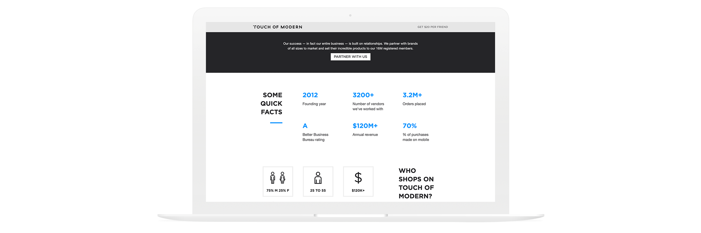

TOMO Partner Page Redesign
Overview
At Touch of Modern (TOMO), an e-commerce experience for modern men to discover curated, well-crafted products, we partner with a variety of brands to market and sell their products on our site. However, the partner page lacked information for potential vendors.
The goal of this project was to increase the chances that potential vendors would partner with us.
Responsibilities: User Research, Prototyping, Interaction Design, Visual Design, Quality Assurance Testing
01. Research & Analysis
😟 Problems with the Current Filter
Before I began prototyping, I collected information from Touch of Modern employees, vendors, and competitors to get a better sense of how to approach this redesign. Through my findings, I found the following issues with the current partner page:
- Doesn’t explain how beneficial it is to partner with us
- Lacks clear instructions on how to initiate a partnership
- No explanation of what the process to partner with us is like
✨ Opportunities to Improve
In order to redesign the existing page, I have identified the following improvements:
- Update the partner page to clearly explain key information (such as describing who we are, what we do, and how we will work with them)
- Implement a clean, minimalistic, and easy-to-read layout that allows users to easily navigate through the entire page
🔎 Competitive Analysis
It is important to look at what other companies are doing and determine their strengths and weaknesses. I looked into three companies: Ebay, Zulily, and Indiegogo.
{kind=link}
After analyzing the data, I was able to narrow down the specific information we needed to include on the partner page. I presented my findings to the Director of Sales and finalized the page to include the following elements:
- Who
- Intro about us
- Facts about us
- What
- Description of what we do
- How
- Description of our work process
- Partners we’ve worked with
- Success stories
- Reviews/quotes from vendors
- How to apply to be a vendor
02. Design
✍️ Paper Prototype
To begin, I started out by drawing the framework on paper to get a sense of how things would look. The goal was to get the vendors to contact us via the form at the bottom. Displaying extraneous details would hinder vendors from quickly reaching the form. Thus, after reviewing my sketches, I decided to pick the design that made the page less text heavy.
{kind=link}
✏️ Low-Fidelity Prototype
At this step, I focused on the details and tried to make everything brief so that vendors could easily gather the necessary information and start completing the form. At this step, I started to involve the stakeholders to gather some quick feedback.
{kind=link}
✨ High-Fidelity Prototype
After gathering some feedback, I moved on to the high-fidelity prototypes and presented more options for each section. Each of them focused on displaying the information in a concise and clean way while keeping them engaged.
{kind=link}
😊 Final Design
After more rounds of feedback with stakeholders, we concluded with a design that displayed the content in an appealing way and would not overwhelm vendors with all of the given information. The final design was created with the following points in mind:
- Added a navigation bar on top to make browsing through the sections easier
- Made the page more interactive with animations for sections with more information (such as the “Our Team” section)
- Put more emphasis on photos and videos to make it less text-heavy
- Included more vendor reviews to provide more credibility
{kind=link}
03. Quality Assurance
I worked closely with the engineers to ensure that the implementation was as close as possible to the final design. Any bugs and issues were then tracked via email to ensure that they get fixed. We also tested it internally with all employees to find and fix any missed bugs before releasing the final version to the public.
04. Results & Takeaways
📊 Results
- Stakeholders were very satisfied with the results as the new partner page increased the number of partnership inquiries.
- Reduced the amount of back and forth communication between our sales team and vendors because the form gathered all the necessary information ahead of time.
💡 Lessons learned
- Animations can be beneficial if used effectively.
- Constantly check in with different teams to ensure their parts are completed in time and to avoid delays for the design team.
- It is important to provide copywriters with a character limit early to avoid unnecessary back-and-forth edits.
- Keep track of issues via Google Doc/Sheets so it’s easier to reference.
📅 Next Steps
- Create marketing for partner page - send emails, display ads, etc.
- Add an awards section
- Build a dedicated page for partnered vendors to share their success stories with us